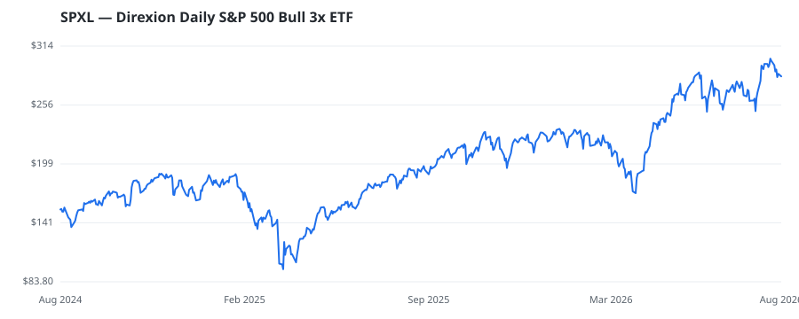

bullish · bearish · n/a — dots: price>SMA10 · SMA10>SMA50 · SMA50>SMA200 · up>down volume (20d)

This name produced 0.5% of the ranked funds’ total alpha.
🛒 Newly buying: Gainplan LLC (+-6%, 4.0% of book)
| Fund | Fund alpha vs SPY | Position | % of book |
|---|---|---|---|
| PPSC Investment Service Corp | +26% | $688M | 43.4% |
| Gainplan LLC | -6% | $10M | 4.0% |
| BANTAMAC CAPITAL, LLC | +12% | $0M | 0.2% |
Hedge data: SEC EDGAR 13F · ranked funds beat SPY in >50% of their quarters · fund alpha = mirror-portfolio return minus SPY.